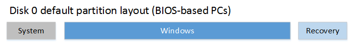

Disk 磁盘
ext4与ntfs的性能测试
root@mu:/sys/devices$ fdisk -l
root@mu:/sys/devices$ hdparm -Tt /dev/sda2 # 测试sda2分区硬盘读取速度
root@mu:/sys/devices$ hdparm -Tt /dev/sda3 # 测试sda3分区硬盘读取速度
dd if=/dev/zero of=/tmp/output.img bs=8k count=256k; rm -rf /tmp/output.img # 测试硬盘写入速度
hdparm -Y /dev/sdx # 实现机械硬盘磁头归位停转
Super PI
time echo "scale=500;4*a(1)"|bc -l -q
Windows
SSD Win7 59.81GB # 64G SSD 60GB
mSATA WinXP Linux 59.63GB # KINGSTON SMS100S264G
-------------------------------------------------------------------------------
root@deepin:/# fdisk -l
Disk /dev/sda: 320.1 GB, 320072933376 bytes
Device Boot Start End Blocks Id System
/dev/sda1 * 63 236990879 118495408+ 7 HPFS/NTFS/exFAT
Partition 1 does not start on physical sector boundary.
/dev/sda2 236990880 625137344 194073232+ f W95 Ext'd (LBA)
/dev/sda5 236990943 625137344 194073201 7 HPFS/NTFS/exFAT
Partition 5 does not start on physical sector boundary.
Disk /dev/sdb: 64.2 GB, 64223182848 bytes
Device Boot Start End Blocks Id System
/dev/sdb1 * 63 125435519 62717728+ 7 HPFS/NTFS/exFAT
Disk /dev/sdc: 64.0 GB, 64023257088 bytes
Device Boot Start End Blocks Id System
/dev/sdc1 * 63 48243194 24121566 7 HPFS/NTFS/exFAT
/dev/sdc2 48243195 125033894 38395350 7 HPFS/NTFS/exFAT
Disk /dev/sdd: 31.2 GB, 31214010368 bytes
Device Boot Start End Blocks Id System
/dev/sdd1 * 63 60950609 30475273+ c W95 FAT32 (LBA)
root@deepin:/#
Windows 部署选项
Windows 部署选项
Windows 部署选项
硬盘驱动器和分区
对于 UEFI 模式使用 GPT 文件格式，而对于 BIOS 模式则使用 MBR 文件格式。
UEFI：若要阻止 Windows 安装程序或 Windows PE 在 BIOS 模式下启动，请删除媒体根目录上的“bootmgr”文件。
BIOS：若要阻止 Windows 安装程序或 Windows PE 在 UEFI 模式下启动，请删除媒体根目录上的“efi”文件夹。
基于 UEFI/GPT 的硬盘驱动器分区
GPT分区表：GPT，全局唯一标识分区表(GUID Partition Table)
当你将 Windows 部署到基于 UEFI 的设备时，必须使用 GUID 分区表 (GPT) 文件系统对包含 Windows 分区的硬盘驱动器进行格式化。
其他驱动器可以使用 GPT 或主启动记录 (MBR) 文件格式。
一个 GPT 最多可以有 128 个分区。
Windows 分区要求：
系统分区
设备必须包含系统分区。在 GPT 驱动器上，这称为 EFI 系统分区或 ESP。该分区通常存储在主硬盘驱动器上。设备将启动到该分区。
该分区的最小大小为 100 MB，必须使用 FAT32 文件格式进行格式化。
该分区由操作系统加以管理，不应含有任何其他文件，包括 Windows RE 工具。
Microsoft® 保留分区 (MSR)
从 Windows 10 开始，MSR 大小为 16 MB。
将 MSR 添加到每个 GPT 驱动器，有助于进行分区管理。MSR 是不能接收分区 ID 的保留分区。它无法存储用户数据。
MSR分区即微软保留分区，是GPT磁盘上用于保留空间以备用的分区，例如在将磁盘转换为动态磁盘时需要使用这些分区空间
其他实用程序分区
任何不受 Windows 管理的其他实用程序分区都必须位于 Windows、数据和恢复映像分区之前。
这让最终用户可以执行调整 Windows 分区大小等操作，而不影响系统实用程序。
通过使用 GPT 标识实用工具分区，可防止最终用户意外地修改这些分区。
这样会避免在“文件资源管理器”中显示这些分区。
Windows 分区
分区必须至少具有 20 GB 的驱动器空间（对于 64 位版本）或 16 GB 的驱动器空间（对于 32 位版本）。
Windows 分区必须使用 NTFS 文件格式格式化。
在用户完成全新体验 (OOBE) 后，Windows 分区必须具有足够的 10 GB 可用空间。
恢复工具分区
此分区必须至少为 300 MB。
此分区必须有足够的空间存储 Windows 恢复环境工具映像（winre.wim，通常介于 250-300MB 之间，具体取决于添加的基本语言和自定义项），
此外，还需要足以使备份实用程序能够捕获到该分区的可用空间：
如果该分区小于 500 MB，则必须至少具有 50 MB 的可用空间。
如果该分区等于或大于 500 MB，则必须至少具有 320 MB 的可用空间。
如果该分区大于 1 GB，我们建议应至少具有 1 GB 的可用空间。
该分区必须使用 Type ID: DE94BBA4-06D1-4D40-A16A-BFD50179D6AC。
恢复工具应位于 Windows 分区之外的独立分区，才能支持自动故障转移和支持启动通过“Windows BitLocker 驱动器加密”进行加密的分区。
我们建议将此分区紧接 Windows 分区放置。这允许在将来的更新需要更大的恢复映像时，Windows 能够在以后修改并重新创建分区。
数据分区
Windows 10 的推荐分区布局不包括数据分区。但是，如果需要使用数据分区，应将它们放在 Windows RE 分区之后。
这允许将来对 Windows RE 的更新可以通过缩小 Windows 分区来扩大 Windows RE 分区。
此布局使最终用户难以删除数据分区并与 Windows 分区合并空间。
为此，Windows RE 分区必须移动到从数据分区回收的未使用空间的末尾，以便 Windows 分区可以进行扩展。
分区布局
基于 UEFI 的电脑的默认分区布局为：
System partition 系统分区 、 Microsoft Reserved (MSR) partition 、 Windows partition 和 Recovery tools partition 恢复工具分区
进入Windows PE 用 DiskPart 脚本配置对硬盘驱动器进行分区
为分区分配了以下驱动器号：System=S、Windows=W 和 Recovery=R
MSR 分区不接收驱动器号。
X 驱动器号已为 Windows PE 保留
将以下代码在 U 盘上另存为文本文件 (CreatePartitions-UEFI.txt)。
rem == CreatePartitions-UEFI.txt ==
rem == These commands are used with DiskPart to
rem create four partitions
rem for a UEFI/GPT-based PC.
rem Adjust the partition sizes to fill the drive
rem as necessary.==
select disk 0 # 假定 Disk 0 为 目标Hard Disk
clean
convert gpt
rem == 1.System partition =========================
create partition efi size=100
rem ** NOTE: For Advanced Format 4Kn drives,
rem change this value to size = 260 **
format quick fs=fat32 label="System"
assign letter="S"
rem == 2.Microsoft Reserved (MSR) partition =======
create partition msr size=16
rem == 3.Windows partition ========================
rem == a.Create the Windows partition ==========
create partition primary
rem == b.Create space for the recovery tools ===
shrink minimum=500
rem ** NOTE: Update this size to match the
rem size of the recovery tools
rem (winre.wim) **
rem == c.Prepare the Windows partition =========
format quick fs=ntfs label="Windows"
assign letter="W"
rem === 4.Recovery tools partition ================
create partition primary
format quick fs=ntfs label="Recovery tools"
assign letter="R"
set id="de94bba4-06d1-4d40-a16a-bfd50179d6ac"
gpt attributes=0x8000000000000001
list volume
exit
使用 Windows PE 启动目标电脑
DiskPart /s F:\CreatePartitions-UEFI.txt # F 是 U 盘的驱动器号
手动擦除驱动器并将其转换为 GPT：
按 Shift+F10 打开命令提示符窗口
diskpart # 进入 diskpart 工具
list disk # 列出磁盘
select disk number # number为磁盘号
clean
convert gpt
exit
基于 BIOS/MBR 的硬盘驱动器分区
MBR分区表：Master Boot Record，即硬盘主引导记录分区表
系统分区
每个可引导驱动器都必须包含一个系统分区。系统分区必须配置为活动分区。
此分区的最小大小为 100 MB。
Windows 分区
恢复工具分区
Windows 恢复环境 (Windows RE) 工具映像 (winre.wim) 应该位于 Windows 分区之外的独立分区，
才能支持自动故障转移和支持启动采用“Windows BitLocker 驱动器加密”进行加密的分区。
数据分区
Windows 10 的推荐分区布局不包括数据分区。
但是，如果需要使用数据分区，应将它们放在 Windows RE 分区之后。
这允许将来对 Windows RE 的更新可以通过缩小 Windows 分区来扩大 Windows RE 分区
分区布局
基于BIOS的电脑默认分区布局为：系统分区、Windows 分区和恢复工具分区。

当使用 DiskPart 工具部署 Windows 时，请在创建分区后使用“set id=27”命令。
进入Windows PE 用 DiskPart 脚本配置对硬盘驱动器进行分区
为分区分配了以下驱动器号：System=S、Windows=W 和 Recovery=R
X 驱动器号已为 Windows PE 保留
将以下代码在 U 盘上另存为文本文件 (CreatePartitions-BIOS.txt)。
rem == CreatePartitions-BIOS.txt ==
rem == These commands are used with DiskPart to
rem create three partitions
rem for a BIOS/MBR-based computer.
rem Adjust the partition sizes to fill the drive
rem as necessary. ==
select disk 0 # 假定 Disk 0 为 目标Hard Disk
clean
rem == 1. System partition ========================
create partition primary size=100
format quick fs=ntfs label="System"
assign letter="S"
active
rem == 2. Windows partition =====================
rem == a. Create the Windows partition =======
create partition primary
rem == b. Create space for the recovery tools
shrink minimum=500
rem ** NOTE: Update this size to match the
rem size of the recovery tools
rem (winre.wim) **
rem == c. Prepare the Windows partition ======
format quick fs=ntfs label="Windows"
assign letter="W"
rem == 3. Recovery tools partition ==============
create partition primary
format quick fs=ntfs label="Recovery"
assign letter="R"
set id=27
list volume
exit
使用 Windows PE 启动目标电脑
DiskPart /s F:\CreatePartitions-BIOS.txt # F 是 U 盘的驱动器号
在 VHD 上部署 Windows（原生启动）
启动到 VHD（原生引导）：将虚拟硬盘添加到启动菜单
20151211